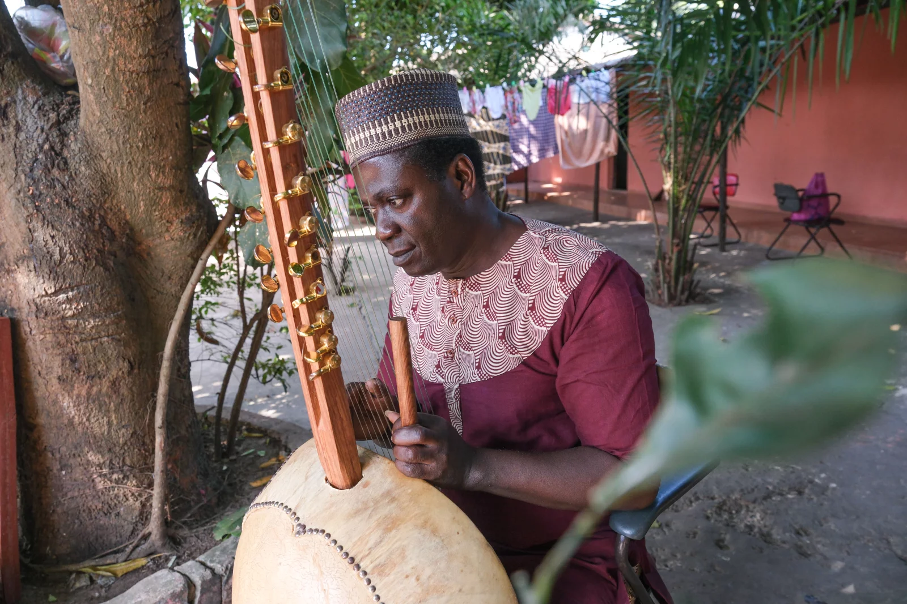
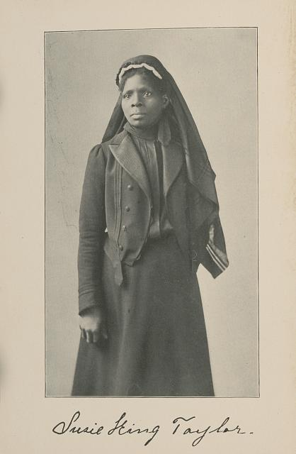
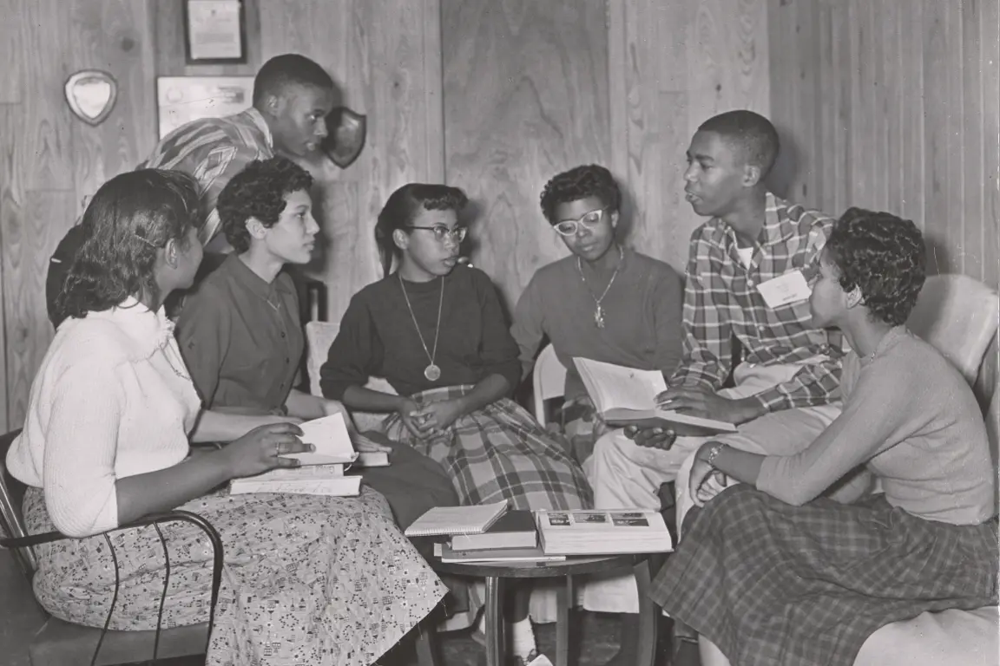

Some of the Ways Black Leaders, Communities, and Traditions have Shaped Education in America
Black people have been strengthening, shaping, and beautifying every aspect of American life since before America even existed. Education is no exception.
Before America
Before America existed, the ancestors of most Black Americans lived in West and Central Africa. Africa is a huge continent with many different cultures that have created many different forms of education. Before America existed, Africans were teaching and learning in huge universities, outside in nature, and everywhere in between.
Sankore' University
Sankore’ University was built by the Mali Empire in a city called Timbuktu. Students from all over Africa, as well as Asia and Europe, would travel to Sankore’ University to study math, science, languages, law, history, the Islamic faith, and more. The university was so big, up to 25,000 students could live there at a time. And the library had up to 700,000 books!
It Takes a Village
Have you heard the saying “it takes a village to raise a child?” Adults in African villages worked together to make sure that the children in their village received a great education. Children who showed potential in skills like fishing, farming, art, music, spiritual and physical healing, wood-working, metal-working, and conflict resolution would become student-helpers for adults who did those things for work. In this way knowledge could pass directly from one generation to the next.
The Dogon people have lived in remote villages in West Africa for centuries, and before that their ancestors may have lived in Egypt. They are famous for their traditional dances, sculptures, masks, buildings, and knowledge of the stars. For countless generations, Dogon astronomers have been passing down information about the Sirius star system, including facts that people from other parts of the world didn't learn until just a few decades ago.
Passing Down Knowledge Through Songs
In many African cultures, there was and is a job that combines history, music, and storytelling. Different cultures have had different names for the people who do this job, but today many people call them by the French word “griot.” A griot's work involves teaching people in their community about history and culture by telling stories, singing songs, and playing instruments. They also create new songs and stories to record important events that happen during their lifetimes.

Nino Galissa is a griot from Guinea Bissau. Some of the stories he shares are about a legendary kingdom called Kaabu. Until recently, very little was known about Kaabu outside of the griots’ accounts. In 2024 a group of archaeologists began digging at the site of Kaabu’s capital city, Kansala. They found evidence that the stories Mr. Galissa shares really did happen. Once their dig had ended, the archaeologists asked Mr. Galissa to write a song about the work they had done. Now the excavation is a part of history for future generations of griots to learn and teach.
During Enslavement
The cruelty inflicted on enslaved people in America cannot be overstated. And yet, throughout centuries of enslavement, Black people continued to educate themselves and others.
Underground Schools
Most enslaved people in America were not allowed to read. In fact, many enslavers would hurt and even kill enslaved people if they caught them reading. Still, some enslaved people learned to read through a system of underground schools.

Susie King Taylor was the first Black Civil War nurse and the first Black woman to write a memoir about the Civil War. But before that she was a young, enslaved girl who learned to read at an underground school in Georgia. Susie’s teacher was a free Black woman named Mrs. Woodhouse, who lived nearby. Susie had to hide her books and pretend Mrs. Woodhouse was teaching her and the other students a trade, when really she was teaching them to read. Some of the underground school students would later teach their friends and relatives what they'd learned late at night when the enslavers were asleep.
Tutnese Language
Enslaved people created a language called Tutnese so they could practice English spelling while also speaking in a code the enslavers didn't understand. In Tutnese, which is also called Tut, each letter in an English word gets exchanged for a short sound. Tutnese spread throughout the South and some families still teach it to their children to this day.
It (Still) Takes a Village
Just as their ancestors had in Africa, enslaved Black adults gave children hands-on lessons in skills like architecture, construction, metal-working, wood-working, farming, fishing, healing, and cooking. As this knowledge passed from teachers to students, it shaped America in all sorts of ways.
When you sit on a shaded front porch, thank the enslaved architects who built houses based on the Yoruba people's homes in West Africa. Next time you enjoy a plate of fried fish, fried chicken or smoked barbecue, give thanks to enslaved chefs who kept African cooking techniques alive in America. And even though getting your annual shots isn't fun, thank an enslaved scientist named Onesimus, who saved thousands of lives when he introduced African immunization technology to Boston, Massachusetts during a deadly Smallpox outbreak. The knowledge he shared is the basis for modern vaccines that help people all over the world stay healthy today.
Still Passing Down Knowledge Through Song
Music was another way Black Americans shared knowledge with each other during enslavement. Enslaved musicians used rhythms and musical styles that reminded them of African music. They created instruments, such as the banjo, that were similar to African musical instruments.
Sometimes, they even managed to pass down the original lyrics of African songs from one generation to the next.
In the 1930s, a linguist named Dr. Lorenzo Dow Turner recorded a woman, Amelia Dawley, singing to her daughter, Mary. Amelia didn’t know what the lyrics meant or even what language they were in, just that her family had been singing the song for generations. Dr. Turner played the recording for one of his students from Sierra Leone, who recognized the language as Mende. Sixty years later, a pair of anthropologists took a copy of the recording to Sierra Leone. They eventually found a woman named Bendu Jabati who started singing along soon after they pressed play. Bendu said that her grandmother had taught her the song and told her that one day she would hear others singing it and know that she was related to them. In 1997, Amelia's daughter, Mary, traveled to Sierra Leone and got to meet her long-lost relative, Bendu, all because of a song that her ancestors had refused to stop singing.
HBCUs
Historically Black Colleges and Universities began as the only places where Black students could pursue higher education in America. Over the years, they have helped shape many of our nation’s leaders, visionaries, and community pillars. Today they are places where students can earn advanced degrees while celebrating Black culture and carrying Black history forwards.
The Fight to Desegregate Schools
After slavery was abolished, many parts of America started using unjust laws and policies to keep Black people separate from White people. This meant Black children had to attend separate schools, where the buildings were in worse condition, the books were older, and the teachers were paid less. Students, their families, and civil rights activists knew that this system was unfair, so they worked together to change it.
Key Organizations
The NAACP strategized to help end school segregation through the courts. In 1951, the organization decided to focus on Topeka, Kansas, where the school board was forcing Black children to attend segregated schools, rather than the neighborhood schools, which were closer to their homes.
To make up for the inferior public education Black students were receiving in Mississippi, SNCC created Freedom Schools in communities across the state. Freedom Schools taught math, history, and literature, and also organized students to work for an end to racist practices, including school segregation.
The LDF brought together some of the most brilliant lawyers in the country, as well as historians, social scientists, and psychologists, to make the case that school segregation should be outlawed.
CORE led protests against segregated schools throughout the country, including in Cleveland, OH. In 1964, the Cleveland School Board began building a new school building, which was intended to keep students segregated. CORE activists laid down in excavation ditches to prevent construction work on the school. Tragically, 26-year-old Rev. Bruce Klunder lost his life when an excavator ran him over.
Important Leaders
While serving as an officer in the segregated US Army, Charles Hamilton Houston realized he was fighting for a country run by people who hated him. He said, “I made up my mind that if I got through this war I would study law and use my time fighting for men who could not strike back,” and that’s exactly what he did. Houston graduated from Harvard Law School in 1923, spent time studying at the University of Madrid, practiced law alongside his father, and then became Dean of Howard University Law School. There, he mentored young Black lawyers, including Thurgood Marshall.
After leaving Howard, Houston served as the first General Counsel for the NAACP, working on cases that challenged racist Jim Crow laws. While brainstorming how to defeat school segregation, Houston realized he could prove that the "separate" schools for Black students were not “equal” at all.
Sadly, Charles Hamilton Houston died from a heart attack in 1950, four years before the US Supreme Court ruled school segregation unconstitutional. His legacy lives on through buildings and institutes bearing his name at Howard and Harvard Universities, and through the countless lives his hard work changed for the better.
After graduating from Lincoln University in 1930, Thurgood Marshall wanted to attend Maryland Law School, but he was denied because the school was segregated. So, he earned his law degree at Howard University, where he graduated first in his class and met his mentor, Charles Hamilton Houston. Then, he began practicing law on behalf of the NAACP, and successfully sued Maryland Law School for denying entrance to Black students.
Marshall didn’t stop there and continued arguing cases to end segregation, including Brown Vs. the Board of Education. In 1967, he became the first Black Supreme Court Justice.
Mamie Phipps and Kenneth Clark met when both were students at Howard University. They began working on psychology research together and got married, then they each went on to earn a PhD in psychology from Columbia University, despite having an extremely racist teacher named Professor Henry Garrett.
Dr. Mamie began using dolls to study the effects of segregation on young children, and her husband, Dr. Kenneth, joined her project. This work led the Clarks to serving as expert witnesses in school segregation cases. In one of these cases, Dr. Mamie testified against her former professor, Henry Garrett, who was arguing in favor of segregation. The Clarks’ research and testimony also helped NAACP lawyers win the Brown Vs the Board of Education case.
Brave Students
Barbara Johns was only 16 years old when she organized a strike to protest the terrible conditions of her segregated high school building in Prince Edward County, VA. After high school, she married and moved to Philadelphia, PA, where she had five children, worked as a public school librarian for 20 years, and earned her Bachelor’s Degree from Drexel University. She passed away from cancer in 1991, and in 2002 the state of Virginia decided to replace a statue of a Confederate general with a statue honoring Barbara Johns.
In elementary school, Linda Brown and her siblings had to walk two miles to catch a bus to a segregated school. Her father, Oliver Brown, attempted to enroll her in an all-white public elementary school that was much closer to their home, but was denied. Mr. Brown decided to sue the school district. His case was combined with other similar cases and became Brown Vs. the Board of Education, which led to school segregation being deemed unconstitutional.
Linda went on to earn a degree in Early Childhood Education from Kansas State University. She opened three libraries for preschoolers through a nonprofit called The Brown Foundation. In 2018, Linda Brown passed away at the age of 75, leaving behind two children and six grandchildren.
Ruby Bridges was only 6 years old when she became the first Black child to attend William Frantz Elementary in New Orleans. She faced such horrible harassment from racist adults that US Marshals had to accompany her as she walked to school each day. The situation inside the school was not much better. Ruby had to spend her whole first grade year in a classroom by herself, and when she finally joined a regular classroom, some of the other students repeated racist things their parents had said about her.
After graduating high school, Bridges became a flight attendant, got married, and had four sons. She also adopted her four nieces when her brother was murdered. In addition to writing books, Bridges brought after-school arts programs to William Frantz Elementary. When Hurricane Katrina hit New Orleans, the school was damaged and the government planned to demolish it, but Bridges managed to get it repaired and placed on the National Register of Historic Places.
In 1956, three six-year-old girls named Leona Tate, Gail Etienne, and Tessie Prevost became the first Black children to attend McDonogh No. 19 Elementary School in New Orleans. Known as the McDonogh Three, the girls faced intense racism and found strength through their close friendship with each other.
As adults, each of the McDonogh three continued to make positive impacts. Tessie Prevost worked at the LSU School of Dentistry and gave speeches about equality. Gail Etienne dedicated her life to activism and spoke out when New Orleans became America’s first all-charter school district, which many experts say has led to re-segregation. Leona Tate formed The Leona Tate Foundation for Change. Following Hurricane Katrina, McDonogh No. 19 Elementary was closed, and in 2019 The Leona Tate Foundation for Change purchased the school building so that it could be transformed into affordable housing for seniors, as well as a space for trainings, programs, and community revitalization.

In 1957, nine teenagers became the first Black students to enter Central High School in Little Rock, Arkansas. Known as the Little Rock Nine, these students faced racist bullying in school and racist abuse from adults outside of school. Still, they persevered and all went on to have successful lives after graduating.
Housing discrimination caused many schools to be unofficially segregated. Dr. Luther Baumgardner, his wife, Myrtle, and their two young daughters, Gretchen and Jane, became one of the first Black families to live in Cleveland Heights when they bought a house on Wilmar Road in 1938. The family received racist threats and even an attempt on their lives. Just five days after moving in, someone threw a stick of dynamite onto their front lawn. Still, the family remained in their new home and sent their children to Heights schools, with Gretchen graduating in 1948, followed by Jane in 1955.
Both Baumgarner daughters went on to earn advanced degrees, enjoy successful careers, and raise families of their own. Gretchen Baumgardner passed away in 2009, but Dr. Jane Baumgardner Savoy is still working as a psychologist in Michigan.
Unfortunately, some white people in positions of power tried to keep schools segregated after the Brown Vs the Board of Education ruling. In Prince Edward County, VA (the same place where Barbara Johns led students in a strike), the school board decided to close the public schools rather than integrate them. White students were given vouchers to pay tuition at private schools that denied entrance to Black students.
In 2017, Donald Trump and U.S. Secretary of Education Betsy DeVos announced a plan for a nation-wide voucher system, which would divert taxpayer money from public schools to private schools. When asked if she would aggressively enforce Civil Rights protections at these private schools, Secretary DeVos revealed that she would not.
Many states already have their own voucher programs. Research has shown that private schools tend to have a disproportionately high percentage of White students and that state voucher programs generally benefit White students from higher-income families more than Black students and those from lower-income families.